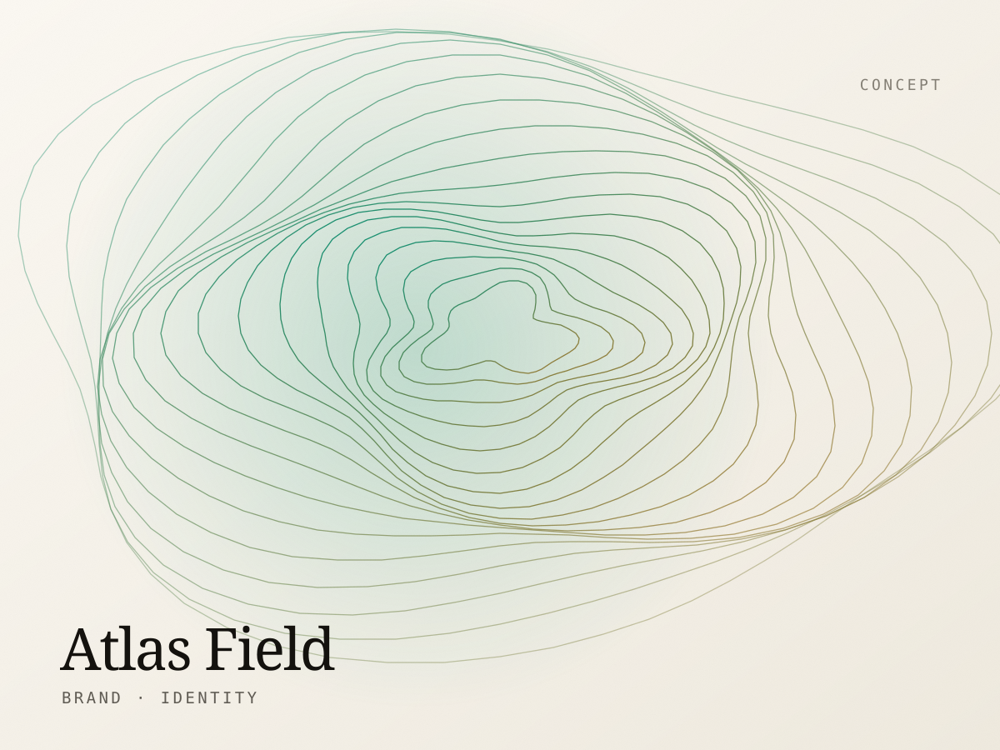
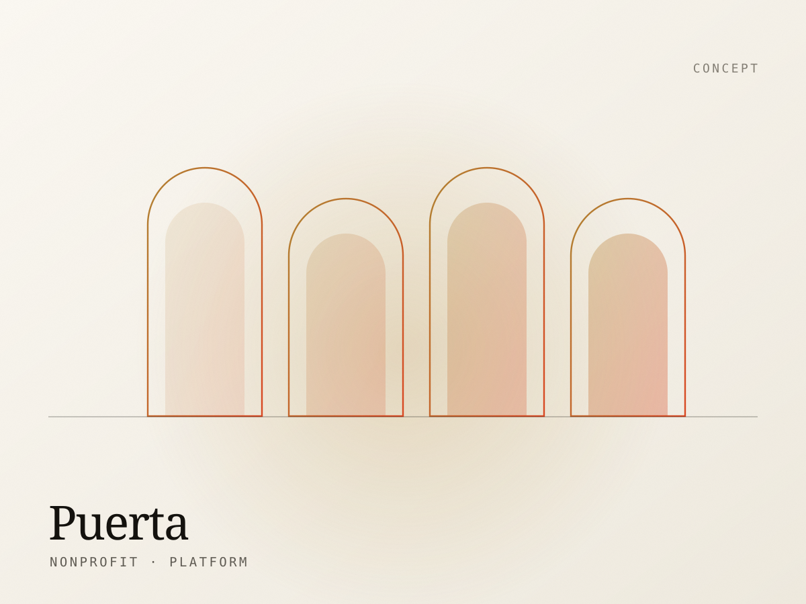
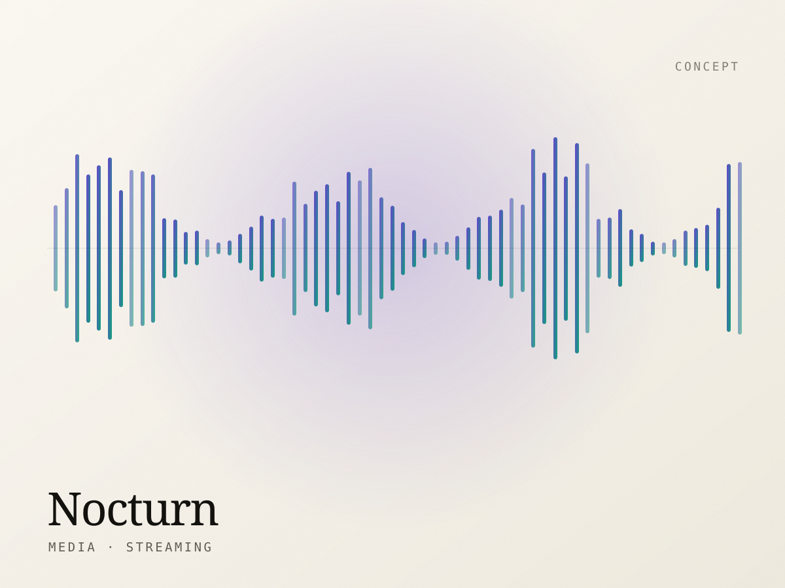

Marea
A savings app for the Caribbean diaspora. Calm data visualisation, bilingual from the first wireframe, and an onboarding flow that explains compound interest without a single spreadsheet.
WebDesignerPR
000
A studio portfolio should show range and judgement, not just finished pixels. Each piece below states the problem it was solving, so you can judge the thinking and not only the surface.
About this work. Every project shown here is a self-initiated concept created to demonstrate range, using fictional brands. None of it is presented as commissioned client work. Real client case studies are available on request under NDA.
A savings app for the Caribbean diaspora. Calm data visualisation, bilingual from the first wireframe, and an onboarding flow that explains compound interest without a single spreadsheet.

A practice monograph disguised as a website. Full-bleed project plates, a type system borrowed from technical drawings, and a scroll that behaves like turning pages.

A boutique hotel group with six properties and one voice. Direct booking built to out-convert the aggregators, on a WordPress back end the on-property teams actually enjoy using.

Logistics software for people who hate logistics software. A marketing site and dashboard sharing one component library, so the promise and the product finally look related.

A specialty coffee roaster moving from market stall to storefront. Subscription-first architecture, a checkout stripped to four fields, and product pages that sell origin as much as roast.

An environmental survey firm with beautiful data and no way to show it. Identity, contour-map visual language, and a site that makes soil reports genuinely worth reading.

A housing advocacy nonprofit serving three language groups. A resource library that works on a five-year-old Android over a weak signal, because that is who needs it most.

An independent label's listening room. Waveform-driven navigation, a player that survives a page change, and artist pages built to be shared rather than crawled.
No projects in that category yet.
Whatever the industry, the deliverables are consistent. This is what lands in your accounts at the end of an engagement.
Type scale, colour tokens, spacing rhythm and a documented component library — so page twelve costs a fraction of page one, and the site still looks like itself two years after we hand it over.
Semantic HTML, component-driven CSS and vanilla JavaScript, commented and organised for whoever works on it next. No build-tool archaeology required to change a heading.
Purpose-made CMS blocks with sensible constraints, plus a written handbook and a recorded walkthrough. Your team can publish confidently without a support ticket.
Analytics, event tracking on the actions that matter, a search-console handover and a baseline performance report — so improvement can be proven rather than claimed.
Next step
We take on a small number of builds each quarter. If you have something in mind for the next one, the earlier we talk, the better the scheduling works for both of us.